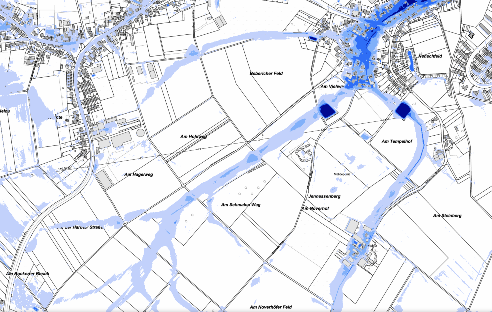

Großer öffentlicher Ortstermin
Datum: Donnerstag, 2. Juli 2026, ab 16:30 Uhr
Ort: Regenrückhaltebecken Schmaler Weg (RRB II / städtische Bezeichnung „Sitzstadt II“), Schmaler Weg 11, 41748 Viersen
⚠️ Hinweis zur Protokollführung (Disclaimer)
Die hier zusammengetragenen Informationen basieren auf den Aufzeichnungen und Gedächtnisprotokollen verschiedener Teilnehmerinnen und Teilnehmer des Ortstermins. Da die Schilderungen aus unterschiedlichen Blickwinkeln erfasst wurden, können Einzelheiten voneinander abweichen. Sollten Sie fehlerhafte Angaben entdecken oder Ergänzungen wünschen, freuen wir uns über eine kurze Nachricht per E-Mail.👥 Anwesende Akteure
- Bürgerinnen & Bürger: Zahlreiche betroffene Anwohner aus Oberbeberich & Viersen
- Vertreter der Politik & Behörden:
- Herr Jörg Eirmbter-König (Vorsitzender des Ausschusses für Klima- und Umweltschutz, Land- und Forstwirtschaft sowie Ratsmitglied im Ausschuss für Stadtentwicklung und -planung und im Haupt- und Finanzausschuss)
- Herr Wolfgang Genenger (Ortsbürgermeister von Süchteln, Mitglied im Ausschuss für Stadtentwicklung, Klima und Mobilität)
- Herr Andreas Pook (Untere Wasserbehörde des Kreises Viersen)
- Herr Parviz Marandi (Geschäftsführer des Mittleren Niersverbands)
- Vertreter der CDU, SPD, Bündnis 90/Die Grünen sowie der FDP
- Ein Vertreter der städtischen Fachbehörde
- Naturschutzverbände: Günter Wessels (Bezirksverband Krefeld/Viersen des NABU)
- Medienvertreter: eine Redakteurin der Rheinischen Post sowie Herr Hämig (Rheinischer Spiegel)
- Bürgerinitiative: Frank Schriewer, Heidi Viereckl, Eva Reuters, Dr. Andreas Olk, Dr. Gerrit Lochmann, sowie eine Studentin des IWW der RWTH Aachen
📰 Presse-Bericht zum Ortstermin
Der Rheinische Spiegel berichtete am 4. Juli 2026 ausführlich über unseren erfolgreichen Ortstermin und die Mobilisierung der Bürgerinnen und Bürger in Beberich für einen besseren Starkregenschutz.Zum Originalartikel im Rheinischen Spiegel: „Beberich mobilisiert nach Starkregen-Alarm – Ortstermin am Regenrückhaltebecken“ →
16:30 Uhr – Begrüßung und Orientierung vor Ort
Eröffnet wurde der Termin durch Frank Schriewer, der die anwesenden Bürger, Politiker, Behördenvertreter und Presseorgane herzlich begrüßte. Am ersten Treffpunkt wurden die topographischen Besonderheiten sowie die hydrologische Ausgangslage erörtert:
- Landschaftlicher Wandel & Hydrologie: Es wurde ein fundierter Vergleich der historischen Veränderungen der Landschaft im Laufe des letzten Jahrhunderts gezogen. Die fortschreitende Entwässerung, die Flächenversiegelung sowie die intensiveren landwirtschaftliche Nutzung haben gravierende Auswirkungen auf die heutige Entwässerungs- und Hochwassersituation im Einzugsgebiet des Hammer Bachs.
-
Visualisierung: Die topographischen Gegebenheiten und Fließwege wurden anhand von Karten sowie historischen Bildern veranschaulicht.
Klimaatlas NRW (Karte mit Niederschlagstagen & Starkregenprognose)

16:45 Uhr – Geführte Heidebegehung & Maßnahmenvorstellung
Im Anschluss begab sich die Gruppe auf eine geführte Begehung des Feldweges, um die Mechanismen des wild abfließenden Wassers direkt in der Landschaft zu verstehen und konkrete Schutzmaßnahmen zu diskutieren:
- Heidebegehung: Gemeinsam ging die Gruppe den Feldweg in der Bockerter Heide entlang, vorbei am zweiten Regenrückhaltebecken (RRB 2). Vor Ort wurde eindrücklich geschildert, wie sich bei Starkregen die Sturzfluten formieren und wild über die Hänge abfließen.
- Wasser verlangsamen & Versickerung fördern: Frank Schriewer demonstrierte potenzielle Maßnahmen zur Abflussverzögerung. Als hervorragendes Praxisbeispiel wurde eine Obstwiese neben und hinter dem Rückhaltebecken vorgestellt, welche unter Beteiligung von Günter Wessels (NABU) als temporäre Versickerungs- und Überflutungsfläche genutzt werden könnte.
- Ackerflächen-Problematik: Im Kontrast dazu wurde die benachbarte Ackerfläche thematisiert. Bei hohen sommerlichen Temperaturen neigt der verdichtete, nackte Boden unter den Pflanzen zu starker Verkrustung (Kompaktheit). Er verliert nahezu jegliche Versickerungsfähigkeit, sodass Wassermassen ungesehen und ungebremst ins Tal schießen.
17:00 Uhr – Eintreffen am Rückhaltebecken Schmaler Weg (RRB 1) & Fachvorträge
Nach Ankunft am Regenrückhaltebecken 1 (Schmaler Weg) wurden zentrale Präsentationen und persönliche Erfahrungsberichte vorgetragen:
- Förderprogramme & Existenzsorgen der Landwirtschaft: Frank Schriewer stellte verschiedene forst- und landwirtschaftliche Förderprogramme der Landwirtschaftskammer vor. Er ging dabei intensiv auf die Sorgen und Ängste der Anwohner ein, betonte aber gleichzeitig nachdrücklich, dass die Landbesitzer für Maßnahmen gerecht entschädigt oder gefördert werden müssen. Da für einige kleinere Landwirte die Abgabe von Ackerflächen prozentual zum gesamten Grundbesitz eine erhebliche finanzielle und existenzielle Belastung darstellen kann, ist eine faire Partnerschaft und vollkommener Interessenausgleich unabdingbar.
-
RWTH Aachen Masterarbeit:
Eine Studentin des Lehrstuhls und Instituts für Wasserbau und Wasserwirtschaft (IWW) der RWTH Aachen stellte die wissenschaftliche Masterarbeit mit dem Titel „Entwicklung eines Maßnahmenkonzepts zur Starkregenrisikominderung mittels hydrodynamischer Analyse von Starkregenüberflutungen in ausgewählten Bereichen der Stadt Viersen“ vor.
Sie erläuterte, wie mithilfe moderner hydrodynamischer 2D-Modellierungssoftware präzise Simulationen durchgeführt werden, um Starkregenflüsse sichtbar zu machen und die Wirksamkeit baulicher sowie natürlicher Schutzmaßnahmen wissenschaftlich zu testen.
Link zum Institut (IWW der RWTH Aachen) - Erfahrungsbericht einer Anwohnerin: Die langjährige Anwohnerin Heidi Viereckl schilderte eindringlich die Situation bei vergangenen Starkregen und Gewittern. Sie berichtete von massiven Schlammlachen und Schlammströmen, die sich regelmäßig über die Wege in Richtung der Wohnbebauung ergießen und erhebliche Schäden sowie unpassierbare Wege hinterlassen.
- Digitale Tools & Interaktive Karte: Dr. Gerrit Lochmann stellte die neue Website der Bürgerinitiative vor, welche unter landunter-am-hammerbach.info (leicht auffindbar in Suchmaschinen unter dem Begriff „Landunter am Hammer Bach“) erreichbar ist. Präsentiert wurde das interaktive Simulationsvideo der Firma Hydrotec (erstellt im Auftrag der Stadt Viersen), das direkt auf unserer Startseite eingebunden ist. Zudem wurde die Interaktive Medienkarte vorgestellt, auf der Bürgerinnen und Bürger Fotos und Videos von Überschwemmungen aus den Jahren 2008 bis 2026 eingetragen haben. Einige markante Regenereignisse wurden als Video vorgeführt. Als neues Feature wurde die Seite Regen-Daten Viersen mit dem integrierten täglichen Regenmengenanzeiger in der Historie vorgestellt, welcher seine verlässlichen historischen Daten direkt von der regionalen Wetterstation Tönisvorst des Deutschen Wetterdienstes (DWD) bezieht.
- Gemeinsame Dokumentations-Offensive: Um Abhilfe zu schaffen, leistet die Bürgerinitiative eine systematische Dokumentationsarbeit: Die Bürger listen kritische Schwachstellen wie verstopfte Röhren und zugewachsene Gräben auf und fotografieren diese. Der Niersverband arbeitet diese Punkte im Rahmen seiner Zuständigkeit anhand einer Prioritätenliste ab und benennt für andere Bereiche die jeweils zuständigen Dienststellen.
- Versicherungsbeiträge & Elementarschutz: Einige Anwohner von Oberbeberich äußerten in der Vergangenheit die Sorge, dass durch eine Bürgerinitiative zum Schutz vor Starkregen die Versicherungen aufmerksam werden und dadurch die Elementarversicherungsprämien teurer werden könnten. Dr. Andreas Olk betont: Dies ist eindeutig nicht der Fall. Die Versicherungen wissen ganz genau, wie hoch das Risikoprofil jedes einzelnen Hauses in unserem Stadtteil is. Unter „Die Versicherer“ kann man im Internet selbst einen sogenannten "Starkregenscheck" für sein eigenes Haus durchführen lassen. Fakt ist, dass bei einem Starkregenereignis schon für ein einzelnes Haus Hunderttausende Euro anfallen können und die Elementarversicherer nicht so blauäugig sind, dass sie dieses Risiko vernachlässigen. Die Häuser in Oberbeberich und Sitzstadt gehören alle der Starkregenrisikoklasse 3 ("Gebäude in Tälern oder in Bachnähe") an.
ab 17:30 Uhr – Politische Statements und Diskussion
In der anschließenden, sehr engagierten Diskussionsrunde äußerten sich Bürger, Experten und die anwesenden Politiker zu den rechtlichen und praktischen Hürden sowie konkreten Lösungsansätzen:
- Politisches Statement: Der Ortsbürgermeister von Süchteln, Wolfgang Genenger, legte dar, dass eine der größten Herausforderungen darin bestehe, dass sich ein Großteil der für Schutzmaßnahmen und Abflussverzögerungen benötigten Flächen in Privatbesitz befinde. Dies erschwert das schnelle administrative Handeln der Stadt erheblich. Dennoch gab Herr Genenger eine konkrete Zusage: Er wird das Thema Starkregenschutz als festen Tagesordnungspunkt auf die Agenda für die nächste Ratssitzung setzen und forcieren, dass das Thema im zuständigen Ausschuss für Stadtentwicklung, Klima und Mobilität prioritär behandelt wird.
- Statement Jörg Eirmbter-König: Als Vorsitzender des Ausschusses für Klima- und Umweltschutz, Land- und Forstwirtschaft begrüßte Herr Eirmbter-König den Vorstoß. Er ergänzte, dass die Starkregen-Problematik glücklicherweise auch bereits in anderen städtischen Gremien und Fachausschüssen aktiv definiert werde, und plädiert für ein schnelles, fraktionsübergreifendes Handeln.
- Statement Herr Andreas Pook (Kreisverwaltung, Untere Naturschutzbehörde): Herr Andreas Pook und ein weiteres Ratsmitglied brachten sich konstruktiv in die Diskussion ein. Es wurde betont, dass Hochwasserschutz und Naturschutz Hand in Hand gehen müssen. Maßnahmen wie die Renaturierung von Bachläufen und die ökologische Aufwertung von Überflutungsbereichen nützen sowohl dem Hochwasserschutz der Anwohner als auch der Biodiversität der Bockerter Heide.
ab 17:50 Uhr – Diskussionen in kleineren Gruppen & Lokale Lösungsansätze
Um 17:50 Uhr teilten sich die Teilnehmer in kleinere Gesprächsgruppen auf, um Detailfragen an den jeweiligen Stationen und konkrete Problemstellen in Oberbeberich direkt vor Ort zu diskutieren:
- Schwachstellen oberhalb des RRB 1: In kleineren Arbeitsgruppen erörterten die Teilnehmer intensiv die akuten Mängel oberhalb des Regenrückhaltebeckens (RRB 1). Erläutert wurden verlandete Entwässerungsgräben und unzureichend gepflegte Bankette (Wegränder). Wenn das Bankett zu hoch aufgewachsen oder ungeeignet befestigt ist, kann das abfließende Wasser nicht mehr in die Gräben einströmen, sondern schießt direkt über die Feldwege hinab und reißt erhebliche Mengen an Boden mit sich.
- Lagebericht Bockerter Straße (Bürgerinitiative): Eine Vertreterin der Bürgerinitiative berichtet anschaulich von der kritischen Situation am Graben und dem Abfluss/Gitter an der Bockerter Straße. Bei Starkregen verstopft dieses Gitter regelmäßig durch mitgeschwemmtes Laub und Geäst, was zu einem raschen Wasseranstau führt und die Straße in eine Flutzone verwandelt.
- Statement Parviz Marandi (Mittlerer Niersverband): Herr Marandi erörterte die oft komplexen, unterschiedlichen Zuständigkeiten im Gewässerschutz. Er wies nachdrücklich darauf hin, dass Hecken- und Grünschnitt von den Eigentümern keinesfalls am Grabenrand liegen gelassen oder unkontrolliert abgelagert werden darf, da dieser bei Starkregen die Gräben verstopft. Er betonte, dass der Mittlere Niersverband auf Meldungen über kritische Zustände bei Gräben und Durchlässen stets extrem schnell reagiert.
- Statement eines Vertreters der Fachbehörde: Ein Vertreter der städtischen Fachbehörde schilderte die schwierige Personallage und die geringe Mitarbeiterstärke in den zuständigen Ämtern als wesentliches Umsetzungshemmnis, hob jedoch auch die positiven Kooperationserfahrungen der Vergangenheit hervor. Er ging auf die Kritik von Anwohnern ein, wonach die Lösung von Mängeln an der Weiherstraße/Rothweg sowie der Bunsenstraße historisch fast 40 Jahre beansprucht habe – maßgeblich verursacht durch bürokratische Trägheit der Stadt Viersen und fortwährende Zuständigkeitskonflikte, bei denen Anliegen immer wieder vertagt wurden.
- Zuständigkeitswirrwarr & Koordinations-Defizit: Mehrere Diskutanten betonten, dass die stark zersplitterten Zuständigkeiten (Stadt Viersen, Kreis Viersen, Niersverband, Straßen.NRW, Landwirte, Privateigentümer) für die verschiedenen Entwässerungsanlagen eine enge Koordination zwingend erfordern. Dies mache das Arbeiten in der Praxis extrem schwierig und schwerfällig.
- Vorschlag zur Entsendung in den Arbeitskreis: Es wurde die Initiative ergriffen, einen festen, behördenübergreifenden Arbeitskreis einzurichten, an dem alle Akteure an einem Tisch sitzen, um zeitnahe Lösungen zu verhandeln. Es wurde vorgeschlagen, dass die Bürgerinitiative 2 bis 3 feste Vertreter in diesen Arbeitskreis entsendet, um den direkten Bürgerwillen einzubringen.
Unterstützen Sie unsere Dokumentation!
Die Bürgerinitiative bittet alle Anwesenden und Betroffenen um die Zusendung weiteren Bild- und Videomaterials (Fotos von Überschwemmungen, vollgelaufenen Gräben oder kritischen Stellen) per E-Mail, um unsere Beweissicherung und die interaktive Medienkarte stetig zu ergänzen.
✉️ Material per E-Mail sendenBleiben Sie informiert!
Abonnieren Sie unseren Newsletter, um aktuelle Berichte und die neuesten Informationen zu den anstehenden Ausschuss- und Ratssitzungen direkt zu erhalten.
📨 Newsletter abonnieren